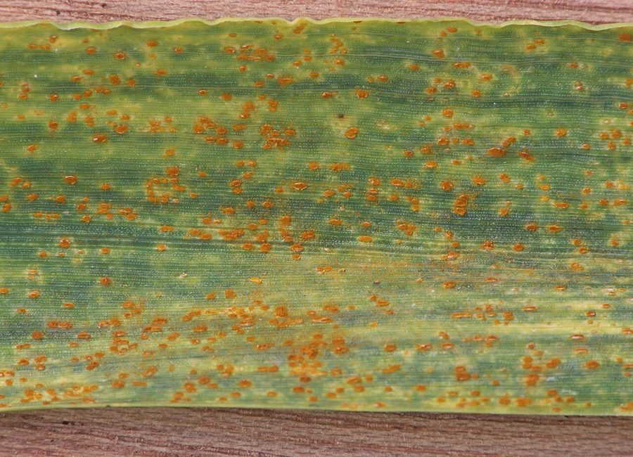

गेहूँ का रतुआWheat Leaf Rust
Puccinia triticina · Pucciniaceae · FNG-0016

- Scientific nameवैज्ञानिक नाम
- Puccinia triticina Eriks.
- Familyकुल
- Pucciniaceae
- Hindiहिंदी
- गेहूँ का रतुआ
- Local namesस्थानीय नाम
- gehun ka ratua, gehu ka ratua, ratua, rust rog, gerui
- Status hereयहाँ की स्थिति
- native
- Movementआवागमन
- Resident, here all year
- IUCNIUCN
- not evaluated
- Reviewसमीक्षा
- audited and independently read
When to look कब देखें
Expected mainly in February, March, April.मुख्यतः फ़रवरी, मार्च, अप्रैल में अपेक्षित।
गेहूँ का रतुआ / Wheat Leaf Rust
Puccinia triticina Eriks. — Pucciniaceae
गेहूँ का रतुआ — गेहूँ की पत्तियों पर लाल-भूरे, धूल भरे दाग जो सर्दी के आखिरी महीनों (फरवरी-मार्च) में अचानक फैल जाते हैं। किसान इसे "रतुआ" या "गेहूँ की बीमारी" कहते हैं। यह कवक हवा से फैलता है, और एक ही रात में पूरे खेत को संक्रमित कर सकता है। संक्रमित पत्तियों का रंग उड़ जाता है, दानों का साइज़ कम हो जाता है, और फसल का नुकसान 10 से 40 प्रतिशत तक हो सकता है। रोधक किस्में लगाना सबसे अच्छा बचाव है।
Quick Identification त्वरित पहचान
| Feature | Description |
|---|---|
| Lesion colour | Reddish-orange to rust-brown pustules (uredinia) on wheat leaves |
| Pustule appearance | Small (0.5–2 mm diameter), circular to oval, slightly raised |
| Leaf surface affected | Predominantly on the lower (abaxial) surface, sometimes on upper surface |
| Pustule arrangement | Scattered or clustered; may coalesce into streaks or patches |
| Leaf damage pattern | Chlorosis (yellowing) around pustules; necrosis (browning) in severe infections |
| Stem and spike symptoms | Can appear on leaf sheaths and occasionally on the flowering head (spike); orange-red discolouration |
| Spore dust | Reddish-orange powdery spores (uredospores) rub off easily onto fingers or clothing |
| Late infection sign | Black, elongated streaks (telia) on leaves near harvest if cool, wet weather persists |
Field tip: Walk through a wheat field in mid-March. Look at the lower leaves of plants in the middle and upper rows. Orange-rust pustules that come off as red dust when you rub a leaf = wheat leaf rust. It is the most common wheat disease in eastern UP.
हिंदी — कैसे पहचानें: गेहूँ की पत्ती पर नीचे की ओर लाल-भूरे, धूल जैसे धब्बे। अगर उँगली से पोंछो तो लाल रंग लग जाता है। फरवरी-मार्च में सबसे ज़्यादा।
Morphology and Symptomatology आकृति और लक्षण
Fungal structure (visible with microscope):
| Stage | Appearance |
|---|---|
| Uredinium (pustule) | Small, oval, with a cup-shaped structure; contains uredospores |
| Uredospore | Orange-red, round to oval, 20–28 × 16–22 µm, wall with fine ridges (echinulate) |
| Telium | Black or dark brown; elongated, on senescing or dead leaf tissue |
| Teleutospore | Dark brown, two-celled, thick-walled; 35–45 × 20–28 µm; winter survival form |
Plant symptom progression:
- Infection to visible lesion: 7–12 days (under optimal conditions: 15–20°C, wet leaves)
- Pustule maturity: Uredinia begin to produce orange spores; easily visible as dust
- Symptom spread: Secondary infections from spore dispersal; within 3–4 weeks, 50–100% of leaf area affected if unchecked
- Leaf senescence: Heavy infection causes early leaf death; grain fill is reduced
Life Cycle / Phenology जीवन चक्र
In eastern UP (winter wheat crop: November–April):
| Stage / Month | Event | Notes |
|---|---|---|
| November–December | Wheat crop grows; primary infection from air-borne spores (inoculum from southern India or neighbouring crops) | Early infection may be light; visible only on susceptible cultivars |
| January | Cool, dry; slow disease progress | Minimal spore production; pustules present but not spreading rapidly |
| February–March | Cooler temperatures (12–18°C), wet weather (rains, dew, irrigation); peak disease pressure | This is the CRITICAL PERIOD for rust outbreaks. Uredospores produced prolifically; secondary infections accelerate. If rainfall occurs, disease doubles every 4–7 days. |
| April | Wheat ripens; cooler nights and warm days; teleutospore formation | Telia (black pustules) may appear on leaves; wheat approaches physiological maturity. Disease becomes less severe as green leaf area declines. |
| May–October | Wheat harvested; uredospores do not survive dry wheat residue; fungus overwinters as teleutospores (cannot infect wheat directly in India) | In cooler hill regions or northern plains, alternate hosts (grasses) may sustain the fungus; no significant alternate-host phase documented for eastern UP |
| December (next year) | Inoculum returns from southern states (Deccan) where wheat rust persists year-round in warmer climates; also from stored infected seed | Early infestations are often traced to infected seed or air-borne spores from warmer regions |
Inoculum source for eastern UP: Puccinia triticina is heterothallic and requires sexual reproduction on alternate hosts in cooler regions. However, in India, the rust overwinters primarily as uredospores in warmer southern states (Deccan plateau, 15–20°C year-round). Inoculum arrives in UP via wind currents during December–February.
हिंदी — जीवन चक्र: दक्षिण भारत से हवा में आता है। फरवरी-मार्च की ठंड और बारिश में खूब फैलता है। मार्च के अंत तक गेहूँ पक जाता है तो रतुआ कम हो जाता है। अगली सर्दी में फिर से आता है।
Ecology and Substrate पारिस्थितिकी और आधार
Obligate plant pathogen: Puccinia triticina is an obligate biotroph — it can only survive and reproduce inside living wheat tissues. It cannot survive in soil or on dead plant material (unlike Rhizopus or Aspergillus).
Moisture and temperature preference:
- Optimal for infection: 12–20°C, leaf wetness duration ≥6 hours (dew, rain, or sprinkler irrigation)
- Rapid reproduction: 15–18°C with frequent wetting; disease doubles every 4–7 days
- Stress to fungus: >25°C (too warm) slows sporulation; <5°C (too cold) stops reproduction
- Dry conditions: Uredospores desiccate and die within hours without moisture
Spore dispersal: Uredospores are passively dispersed by wind. A single pustule can release millions of spores; in an epidemic, spores travel hundreds of kilometres on air currents. Eastern UP epidemics are often initiated by spores arriving from southern India on February winds.
Host specialization: Puccinia triticina has numerous physiologic races (biotypes specialized to specific wheat cultivars). This means that a resistant variety may be invaded by a new race; hence, the need for rotation of resistant varieties and breeding programs.
Agricultural / Human Relevance कृषि प्रासंगिकता
Economic impact:
- Yield loss: substantial, depending on variety susceptibility, crop growth stage at infection, and environmental conditions.
- Quality loss: Grain weight and protein content reduced; not directly harmful to human consumption, but affects market value.
- Geographic significance: Wheat leaf rust is the single most damaging wheat disease in eastern UP and causes estimated losses of ₹100–200 crores annually across India.
Management — in order of priority:
- Resistant varieties (MOST EFFECTIVE):
- Currently recommended in UP: HD 2967, HD 3086, PBW 502, HD 2733, DBW 17 (all have rust resistance genes)
- Older susceptible varieties still grown by some farmers: Sonalika, UP 262, PBW 343 — these incur heavy losses every year
- Seed replacement: Farmers should use seed of recommended resistant varieties from certified sources
- Varietal rotation: New resistant varieties should be deployed every 5–7 years to prevent virulence buildup
- Cultural practices:
- Early sowing (Oct 15 – Oct 31): Early-maturing varieties escape late-season peak disease pressure
- Late sowing (Nov 15+): Increases disease severity; avoids
- Clean seed: Use rust-free seed from certified sources; do not save seed from infected crops
- Field sanitation: Remove infected straw and stubble; do not use for cattle feed in next planting season (residual spores)
- Crop residue management: Do not leave infected wheat residue in the field; burn or bury
- Fungicide spray (supplementary, not primary):
- Spray timing: Monitor crops in February; spray at first sign of rust or when 5% of leaves are affected
- Fungicide choice: Propiconazole or Hexaconazole (azole class); apply 2–3 times at 10-day intervals if weather remains wet
- Cost: ₹500–800 per hectare; economical only for susceptible high-value varieties (seed production, premium wheat)
- Caution: Repeated use of the same fungicide selects for resistant fungal strains; rotate fungicide classes
- Integrated strategy in farmers' fields:
- Use resistant variety (primary control)
- Early sowing with adequate plant density
- Timely irrigation (avoid late-stage irrigation that keeps leaves wet at night)
- Spray only if disease exceeds 5% leaf area in susceptible variety (economic threshold)
Government support:
- Uttar Pradesh Agriculture Department and ICAR promote wheat rust-resistant varieties through state agricultural extension
- Farmers are advised annually (via radio, posters, SMS) to use recommended varieties
- Seed replacement programs subsidize the cost of certified resistant seed
हिंदी — रोकथाम: पहले रोधक किस्म बोओ। अक्टूबर में जल्दी बोओ। संक्रमित बीज न बोओ। अगर फरवरी में रतुआ दिख जाए, तो छिड़काव करो (दवा का नाम: प्रोपिकोनाज़ोल)। लेकिन दवा महंगी है — किस्म बदलना ज़्यादा अच्छा है।
Expected Locally स्थानीय रूप से अपेक्षित
Not a field record. Written from published accounts for eastern Uttar Pradesh. No confirmed local sighting yet — if you have seen it, that is what the atlas needs.
अभी तक स्थानीय पुष्टि नहीं। यह विवरण प्रकाशित स्रोतों से है, किसी अवलोकन से नहीं।
Wheat leaf rust is expected annually in Basti and Ayodhya districts wherever winter wheat is grown (November–April). Epidemics are most severe in susceptible varieties (particularly Sonalika, UP 262, older cultivars still grown by traditional farmers) when February–March brings cool, wet weather. In years with above-average rainfall and cool February–March, rust can cover most of the leaf area in unsprayed, susceptible fields. Farmers growing resistant varieties (HD 2967, PBW 502) report minimal or no rust in typical seasons. The disease is most visible in mid-to-late February and during March; it becomes less severe as wheat ripens in April.
Distribution वितरण
Global range: Wheat leaf rust is found wherever wheat is cultivated in subtropical and temperate regions. Particularly prevalent in India, Pakistan, Nepal, and Bangladesh where winter wheat is grown.
In India: Present in all wheat-growing states. Severe epidemics occur regularly in the Indo-Gangetic plain, particularly in Uttar Pradesh, Punjab, and Haryana.
In Uttar Pradesh: Found in all wheat-growing districts. Eastern UP (Basti, Gorakhpur, Mau, Ayodhya) experiences consistent, significant disease pressure every season due to cool, moist February–March conditions.
In Basti district / eastern UP: Annual epidemic occurrence; expected in every wheat field unless resistant varieties are grown or fungicides are applied. Field surveys in March show much of the leaf area affected in susceptible varieties while resistant varieties stay nearly clean.
Research Questions शोध प्रश्न
- Which wheat varieties are grown in your village, and which show the most rust? / आपके गाँव में कौन-सी गेहूँ की किस्मों में सबसे ज़्यादा रतुआ लगता है? — Survey 10 farmers; note variety name, sowing date, and Feb–Mar rust severity (0–100%).
- When does rust first appear in your village wheat crops each year? — Record the date of first visible symptoms for three consecutive years; correlate with weather.
- Does early-sown wheat (Oct 15) show less rust than late-sown wheat (Nov 15) in your village? — Compare two farmers' fields (same variety, different sowing dates).
- If a farmer uses a resistant variety, does the adjacent field with a susceptible variety still get rust? — Study secondary infection from spore drift.
- Can a farmer identify and purchase certified resistant seed from the local seed store? — Ask 5 seed dealers what resistant varieties they stock and at what price.
Similar Species मिलती-जुलती प्रजातियाँ
| Species | How to tell apart | हिंदी |
|---|---|---|
| Wheat Stripe Rust (Puccinia striiformis) | Yellow (not orange-red) pustules; arranged in long, parallel stripes on leaves; more common in high altitude and cool regions (Himalayas); rare in eastern UP | पीले रंग की पट्टियाँ; पहाड़ी इलाकों में |
| Wheat Stem Rust (Puccinia graminis) | Darker, linear pustules on leaf sheaths and stems; taller pustules; rare in eastern UP in current era (controlled by Ug99 monitoring) | तने पर; कम आम |
| Powdery Mildew (Blumeria graminis) | White powder (not orange); fine coating on leaves; no distinct pustules; occurs at same time but on upper surface | सफेद पाउडर |
Field rule: Orange-rust dust on lower wheat leaf surface in February–March = wheat leaf rust. Every other disease is either rarer in eastern UP or visually distinct.
Taxonomy & Classification वर्गीकरण
Original description. Puccinia triticina was described by John Axel Eriksson in 1894 in Ber. Schweizerische Botanische Gesellschaft, vol. 4, p. 43. It was previously confused with Puccinia graminis (stem rust) but distinguished based on host specificity and spore morphology.
Subspecies. No subspecies are formally recognized; however, numerous physiologic races exist (>100 documented globally) based on virulence to different wheat resistance genes.
Family and order placement. Order Pucciniales, family Pucciniaceae. Puccinia is the largest genus of rust fungi, containing over 100 species of economic importance.
Phylogenetic notes. Molecular studies confirm that Puccinia triticina is closely related to Puccinia graminis but is specifically adapted to Triticum (wheat). The origin of Puccinia triticina is believed to be in the Fertile Crescent (origin of wheat), where wheat has coevolved with its pathogens for thousands of years.
IUCN status rationale. Not evaluated. As an obligate plant pathogen maintained by its host crop, its conservation status is not applicable. Its economic impact is managed through crop improvement and disease management research.
Photo Gallery फोटो गैलरी
Photos needed आवश्यक फोटो
- [ ] Wheat leaf showing orange-red pustules on lower surface (पत्ती पर लाल दाग)
- [ ] Close-up of pustule showing reddish spore dust (धूल)
- [ ] Infected wheat field with yellowing leaves (पूरा खेत पीला)
No photos yet — add field photos to media/species/wheat_leaf_rust/ and run node scripts/sync_photos.js.
References संदर्भ
- Eriksson, J.A. (1894). Ber. Schweizerische Botanische Gesellschaft, vol. 4, p. 43. [original description]
- Roelfs, A.P., Singh, R.P. & Saari, E.E. (1992). Rust Diseases of Wheat: Concepts and Methods of Disease Management. CIMMYT, Mexico.
- Sharma, I. & Duveiller, E. (2007). Prospects of Resistance Breeding for Wheat Diseases. CIMMYT, Mexico.
- Indian Council of Agricultural Research — Directorate of Wheat Research (2021). Recommended Wheat Varieties for Uttar Pradesh. ICAR-DWR, Agra.
- Uttar Pradesh Agriculture Department (2020). Wheat Disease Management Guidelines. Government of Uttar Pradesh, Lucknow.
- GBIF Occurrence Data — Puccinia triticina, India (2026).
Source file: species/fungi/molds/wheat_leaf_rust.md